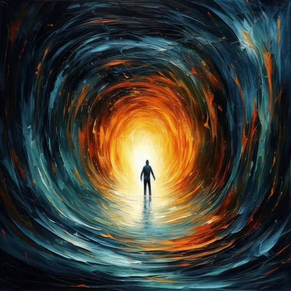

Art Alive Labs · a test
Almost Blindness on a mug
Point your phone at the mug and the painting comes alive, wrapped around the curve, staying put as you turn the mug.
- 1. The mug
Use the printed mug, or print the test sheet at 100%, cut it out and tape it round any mug or can.
- 2. How wide is it?
Not sure? Leave it to the camera. It works out the width (and whether the cup tapers) from how the picture curves.
- 3. Point and turn
Hold the phone a foot or so away, with the whole painting in view. Then slowly turn the mug.
